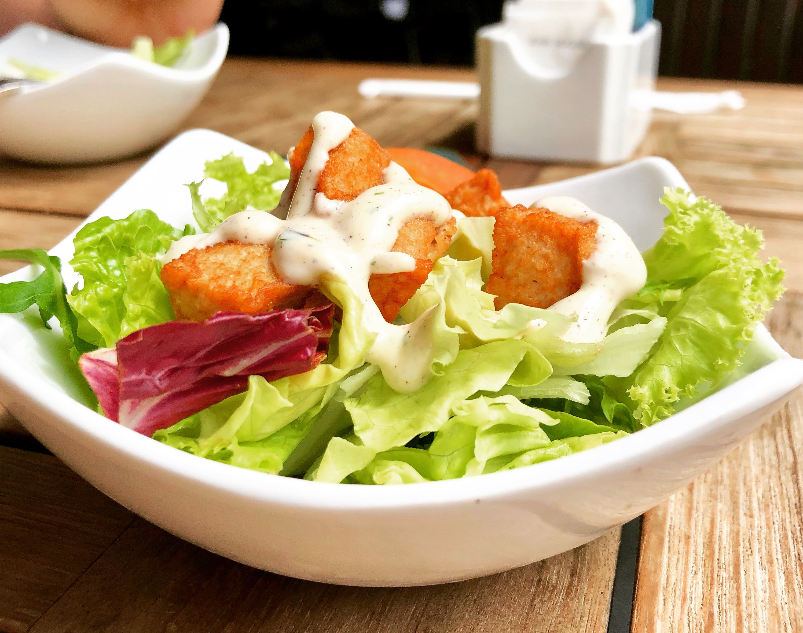

Welcome to Healthy Recipes
We provide a wide range of healthy and delicious recipes to help you maintain a balanced diet and improve your health.
Light Lunches
- Grilled chicken salad
- Tuna Salad Sandwhich
Recipe 1: Grilled chicken salad Ingredients: 1/2 cup of cooked grilled chicken, shredded 1/2 cup of mixed greens 1/4 cup of chopped cucumber 1/4 cup of chopped tomato 1 tablespoon of olive oil 1 tablespoon of balsamic vinegar Salt and pepper to taste Instructions: Combine the chicken, greens, cucumber, tomato, olive oil, balsamic vinegar, salt, and pepper in a bowl. Toss to coat. Serve immediately.
Ingredients: 1 (5-ounce) can tuna, drained 1/4 cup mayonnaise 1/4 cup chopped celery 1/4 cup chopped onion 1 teaspoon Dijon mustard 1/4 teaspoon salt 1/8 teaspoon black pepper 2 slices bread Lettuce, optional Tomato, optional Instructions: In a medium bowl, combine the tuna, mayonnaise, celery, onion, mustard, salt, and pepper. Stir until well combined. Spread the tuna salad on the bread. Top with lettuce and tomato, if desired. Serve immediately.

These are just a few ideas for healthy light lunches. There are many other possibilities, so get creative and find what you like best!